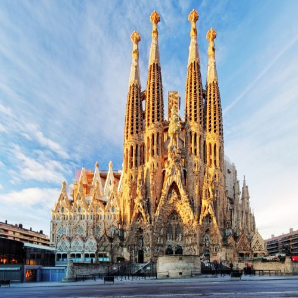
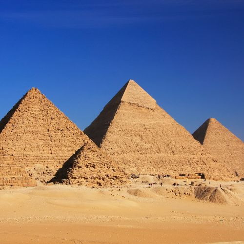
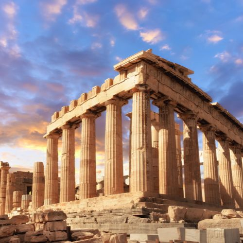
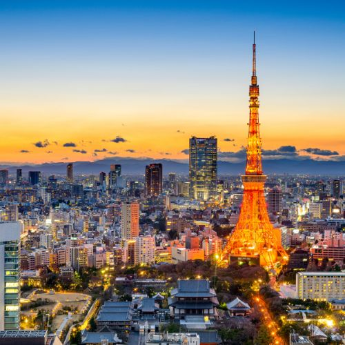
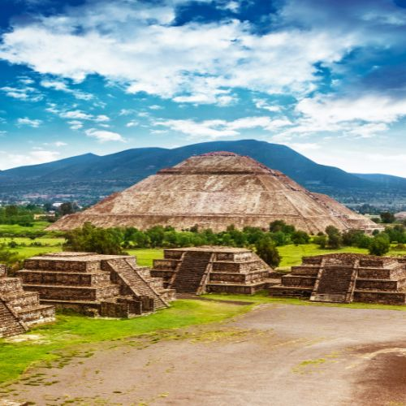
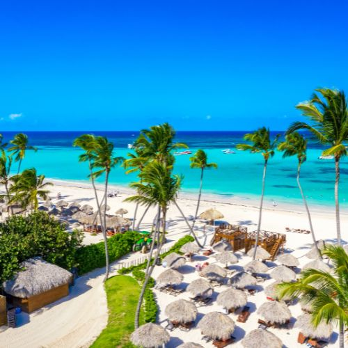
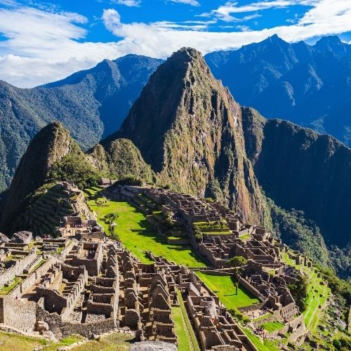
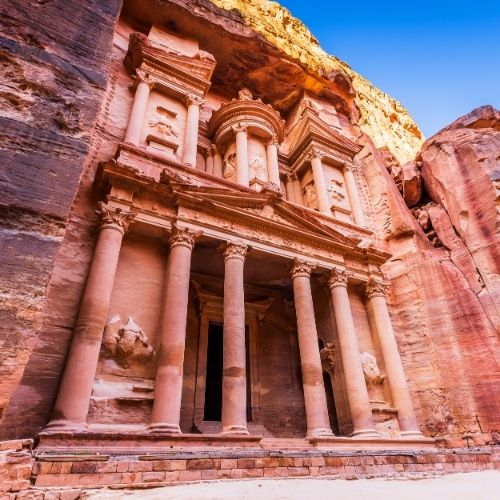
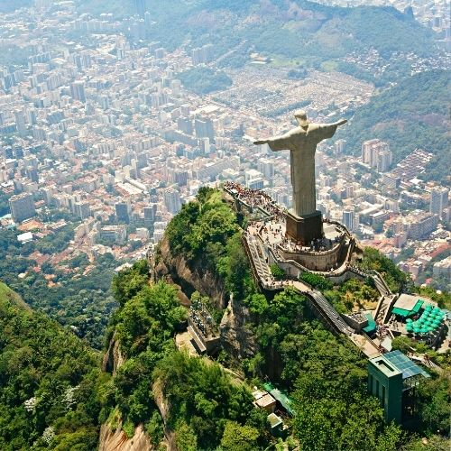
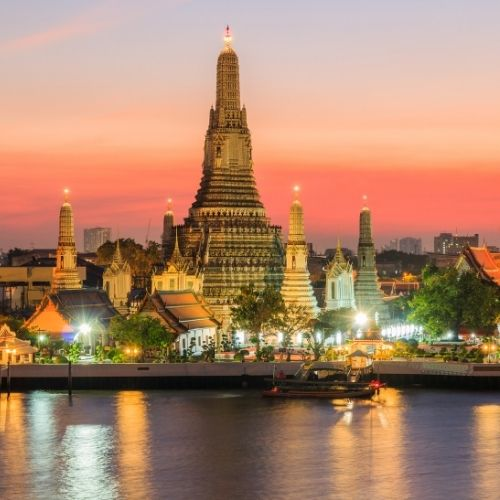

Where To Travel?

Barcelona, Spain
Barcelona is a vibrant city where stunning architecture, rich culture, and seaside charm come together. Marvel at Antoni Gaudí's masterpieces, including the breathtaking Sagrada Família and the colorful Park Güell. Stroll along the bustling La Rambla, savoring local tapas and sangria, or relax on Barceloneta Beach. With its fusion of modern energy and historical heritage, Barcelona is a destination that caters to all tastes.

Giza, Egypt
Giza offers a journey back in time to the land of the pharaohs, where the iconic Pyramids of Giza and the Great Sphinx stand as testaments to ancient engineering marvels. Visitors can explore the mysteries of these structures, ride camels across the golden sands, and delve into the treasures of Egyptian history at nearby museums. Giza promises an unforgettable adventure into one of humanity's most fascinating civilizations.

Athens, Greece
Athens is a city that blends ancient history with modern flair. The Acropolis, crowned by the Parthenon, provides sweeping views and a connection to Greece's storied past. Wander through the Plaka district with its charming streets, traditional tavernas, and vibrant shops. From its archaeological wonders to its warm Mediterranean atmosphere, Athens is a must-visit for history buffs and culture lovers alike.

Tokyo, Japan
Tokyo is a city of contrasts, where ancient traditions meet cutting-edge innovation. Explore historic temples like Senso-ji in Asakusa, then immerse yourself in the neon-lit streets of Shibuya and Akihabara. Tokyo offers world-class cuisine, from sushi to ramen, and unique experiences such as cherry blossom viewing in spring. Whether you're seeking tranquility or urban excitement, Tokyo has something for everyone.

Teotihuacan, Mexico
Teotihuacan, the "City of the Gods," is a UNESCO World Heritage site steeped in mystery and awe. Climb the Pyramid of the Sun or the Pyramid of the Moon for breathtaking views of the ancient cityscape. Visitors can learn about the culture and craftsmanship of this pre-Columbian metropolis through its murals and artifacts. Teotihuacan is a window into the grandeur of Mesoamerican civilizations.

Punta Cana, Dominican Republic
Punta Cana is a tropical paradise known for its white-sand beaches, crystal-clear waters, and luxurious resorts. It’s an ideal destination for relaxation, water sports, and vibrant nightlife. Explore the nearby ecological parks, go snorkeling in coral reefs, or enjoy a catamaran cruise. With its warm weather and welcoming locals, Punta Cana is a haven for sun-seekers and adventure lovers alike.

Machu Picchu, Peru
Machu Picchu is one of the most iconic archaeological sites in the world, perched high in the Andes Mountains. This Inca citadel offers stunning views, fascinating history, and a sense of spiritual wonder. Visitors can hike the famous Inca Trail or take a scenic train ride to this UNESCO World Heritage site. Machu Picchu is a bucket-list destination that leaves every traveler in awe.

Petra, Jordan
Petra, the ancient "Rose City," is a mesmerizing blend of natural beauty and human ingenuity. Carved into red sandstone cliffs, the iconic Treasury (Al-Khazneh) and the Monastery (Ad-Deir) are architectural wonders. Wander through the narrow Siq canyon and discover this UNESCO World Heritage site’s rich history. Petra is a captivating journey into the heart of the Middle East's past.

Rio de Janeiro, Brazil
Rio de Janeiro is a city of samba, sunshine, and stunning scenery. From the towering Christ the Redeemer statue to the breathtaking views atop Sugarloaf Mountain, Rio is filled with iconic landmarks. Relax on the golden sands of Copacabana or Ipanema Beach, and experience the energy of Carnival. With its vibrant culture and natural beauty, Rio is an unforgettable destination.

Bangkok, Thailand
Bangkok is a bustling metropolis that offers a sensory overload of sights, sounds, and flavors. Visit the opulent Grand Palace and Wat Arun, or explore the vibrant floating markets. The city's street food is legendary, with dishes like pad thai and mango sticky rice captivating every traveler. With its mix of tradition and modernity, Bangkok is a gateway to Thailand’s enchanting culture.